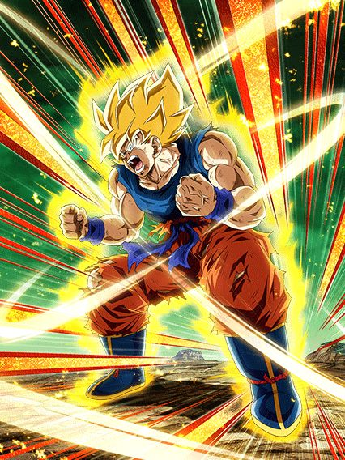

A melhor celebração de downloads de todas.
Essa foi facilmente a melhor celebração do ano, e nas top 3 melhores celebrações da história desse jogo, tudo foi insano do começo ao fim
Eventos, cards, tudo estava num hype insano, isso junto ao memes claro, eu amei essa época do jogo.
^ Sumário (clique para ir a qualquer um dos tópicos)
KKKKKKKKKKKKKKKKKKKKKKKKKKKKKKKKKKKKK se ferrar mano
Não tem competição, o marketing da celebração de downloads foi simplesmente genial, o rap não é ruim, na verdade ele gruda fácil na mente e é hilário ao mesmo tempo
Nada vai superar chegar na escola e cantar com os manos "COOLA COOLA FREEZA NO BROTHA" como um bando de esquizofrênicos tá?
Literalmente ninguém esperava isso e foi incrível um rap do cooler ser a primeira coisa da celebração
Fato extra a mencionar: Na conta oficial do twitter do dokkan, o rap só tá disponível pra ver se vc estiver no japão ou obviamente usar uma VPN, oq é meio aleatório mas no momento q alguém descobriu, o negócio estourou fácil.
Eu amo esse video, de coração
Obrigado dokkan.
COOLER LR
ADICIONAIS.
TODOS ELES.
Esse mano tornou os vilões usáveis outra vez e ele por si só é um card extremamente divertido de jogar, eu amo usar ele toda vez q é possível
Acho q o mais engraçado é o cooler não ter um kit extremamente complexo mas q é muito forte e divertido, já q ele se resume a atacar 1 bilhão de vezes e ele faz isso já
Pra começar ele tem uma intro incrível com uma condição legitimamente fácil de ter outro terrifying conquerors no time, isso junto com 1 adicional a mais
E ele vai precisar de adicionais, já que além dos 100% de ATK e DEF q ele tem de base ele ganha mais 100% só que de 10 em 10 a cada ataque feito
Pode até parecer muito, mas não é, pq o cooler lança pelo menos 3 ataques por turno e com a intro, 4 (se quiser contar o hidden potential, 5, isso já é metade buildado em 1 turno)
Depois de 10 ataques, ele ainda lança um super adicional garantido, e pra esse cara, supers adicionais são a salvação pq cada super aumenta 50% de DEF no turno, isso com big bad bosses.. rapaz
Aí vc pode até pensar "ok ele ataca bastante mas o dano é bom?", mas eu lhe respondo que com certeza, já que pra garantir que ele fosse bem balanceado, esse cara STACKA ATK no ultra super attack, então é, além de todo o build atacando, esse cara ainda stacka, dá pra pedir mais de um personagem?
Dá sim.
A active do cooler é a literal nuke, depois de vc stackar sei lá quantas vezes vc mandar uma supernova absurda com uma animação linda e uma ost maravilhosa.. realmente um dos cards mais brabos do ano
Lógico, o cooler é 100% baseado no rng pra vc dar sorte nos adicionais, mas se rolar, vc cozinha muito slk
PICCOLO STR THE GOAT
O CARD MAIS GENTE BOA DESSE JOGO.
O piccolo str revolucionou o que a gente considerava normal pra suportes, além de ter sido o primeiro de muitos piccolos bons que viriam no futuro
E não tem como, esse cara funciona em qualquer time, ele é genial
O cara simplesmente tem defesa ativa, 200% de ATK e DEF no começo do turno e tem 15% de redução de dano por movie heroes na rotação PQ SIM, ELE PODE
Ele tmb ganha 50% de ATK e DEF a mais quando leva 1 golpe, além de 30% de chance de critar q não é muito oooomaga já q ele não dá tanto dano assim
O piccolo é tudo q vc poderia pedir num suporte, já q ele é um tank muito bom, e ainda dá ki e 30% de ATK e DEF pra todo mundo sem complicação ou condições horríveis
Ele tmb tem 50% de ATK e DEF contra apenas 1 inimigo e caso tenham mais de 1 ele substitui por 100% de DEF mas isso não é insanamente relevante
Em resumo, palavras não são o bastante pra descrever o quão incrível é o piccolo, o cara simplesmente é o suporte mais gente boa de todos e eu continuo amando jogar ele em qualquer time e ele cozinhar sempre
GOKU CARNIVAL
THE GOAT.
O primeiro LR carnival de todos e eu devo dizer que ele foi muito bem introduzido, sendo o primeiro lider direto 200% pra powerful comeback, animações lindas, kit muito forte e osts que eu irei falar mais depois..
Sobre o goku, ele é um card "oposto" ao cooler, já que enquanto o cooler é uma máquina de dano implacável, esse cara é um tank insano desbalanceado
Bom, esse cara stacka DEF, já começa aí a zueira pq a defesa dele já é alta, então eles decidiram colocar nele um buff de 59% de DEF quando ele leva um ataque por turno, ou seja, não dá pra ver no turno, mas se vc tem uns 300 e poucos mil de defesa, depois de tomar um ataque vc já tá na casa dos 500k
Ele tmb builda 5 de Ki e 59% de ATK com 6 golpes, oq é bem decente e é necessário ele tomar esses golpes pra dar uns 7 ou 8 milhões de dano, por sinal, quando ele leva um ataque, além do buff de DEF ele fica efetivo contra tudo, então aproveite
E aí vem a melhor parte, esse cara tem a mecânica de defesa ativa mais decente possivel, já que acima de 60% de HP vc tem defesa ativa (lembrando todos os buffs defensivos mencionados antes), e caso esteja abaixo de 60%, o goku perde a defesa ativa de propósito, pois essa é a mesma condição pro revive dele que é simplesmente inexplicável, animação incrível e a ost que foi a melhor do jogo por um bom tempo
Essa animação tá em outro nivel, e o compositor do dokkan cozinhou tudo nessa ost, é absurdo um negócio desse slk
Enfim, pós-revive vc ganha MAIS buffs, já que agora sua defesa ativa é permanente, ou seja, sem mais fraqueza, e agora o goku tem 50% de chance de crítico, oq significa q ele levar um ataque pra ficar efetivo não é obrigatório mais
E esse cara ainda tem uma active depois de reviver..
Essa active é uma coisa, tipo, ela dá um dano legal se critar mas pô, animação meio feia, q por sinal fica muito zuada se o boss for maior q o goku, pelo menos a ost e a tela de K.O são incríveis de qualquer jeito, e infelizmente ela tem a maldição de quebrar 1 ataque inimigo no começo, só que por algum motivo os bosses amam ser trolls e dar um super no segundo ataque ao invés do primeiro pra q vc vire um 💀 vivo
Enfim, eu amo esse card, o mano me carregou por red zones inteiras slk
EZA do Goku Namek STR
Eles tiveram a oportunidade de deixar esse cara stackar na forma base mas nah.
Esse cara não teve NENHUMA adição na passiva, tudo que fizeram foi aumentar os valores de ATK e DEF que ele tinha e que ele buildava levando golpes
O Super Attack dele agora dá 30% de ATK e DEF pra todos aliados por 1 turno mas você não seria louco de colocar ele no slot 1.. né?
A condição de transformação dele foi levemente buffada pra se ativar quando ele cair abaixo de 77% de HP ao invés de 70%.. é alguma coisa
Eles realmente não queriam buffar esse cara.
Bom, tudo que eles adicionaram é que se ele tiver abaixo de 77% de HP, ele ganha mais 59% de DEF
O resto foram apenas valores de passiva buffados e sim, ele continua tendo uma incrível 30% de chance de ter defesa ativa, muito astuto
E caso ela seja ativa, ela fica ativa por 4 turnos ao invés de 3, wow que incrível
Vale lembrar que se o Goku tiver em vantagem de cor contra um boss, isso conta pra ativar a defesa ativa por 4 turnos
E tem o rage mode dele.

Além de mudar orbs aleatoriamente pra rainbow, ele muda orbs AGL pra STR, o que é interessante eu acho
Isso aqui só dura 1 turno e pelo menos o dano dele tá melhor
Mas em geral, EZA bem segurado pelos devs, realmente não queriam que o stack de DEF desse cara reinasse como o do Birdku.
EZA do Freeza Full Power STR LR
Quantos personagens STR vão ficar no time do Cooler LR?
Bom, os buffs que esse cara ganha perdendo HP foram aumentados, enquanto as condições de HP foram reduzidas
Os 70% de ATK e crítico garantido com menos de 30% de HP q ele tinha antes agora são 80% de ATK e crítico garantido com menos de 40% de HP
Não parece muito, mas ajuda bastante
Não só isso, mas fazendo um Ultra Super Attack, ele ganha +40% de DEF e fica super efetivo, o que é bem útil pro dano dele
Pra finalizar, ele também quebra 1 ação do inimigo se estiver com menos de 40% de HP.. só que isso só ativa 1 única vez
Enfim, EZA aceitável, não muito forte mas também não muito fraco, em geral, útil.
EZA do Cooler TEQ
Dêem um inimigo Goku a este homem.
Esse cara é bem útil pra Super Battle Roads ou Ultimate Clash, já que ele dá stun garantido se tiver um inimigo Goku, e tem 70% de chance de crítico se o inimigo estiver stunado
Ele builda 50% de ATK e DEF dando 3 Super Attacks e ele já tem um adicional na passiva, que infelizmente só tem 30% de chance de ser um Super
Os maiores problemas desse cara são o fato de ele não poder linkar com o Cooler LR, mas ele é forte e isso já ajuda.
O RAP DO METAL COOLER
Não bastou 1, precisávamos da continuação.
Pessoalmente, eu prefiro o primeiro, mas esse é muito bom também e não tem como, o "coola coola freeza no brotha" é bom demais pra não ser repetido
Eu ainda fico estupefato com isso, o marketing pra celebração foi não só 1, mas 2 raps
Eu até agradeceria o autor não sabendo quem é, mas felizmente tempos depois do rap ser lançado, o cantor decidiu se revelar no twitter, então é, fatos curiosos
Vc pode ir até a conta dele aqui se quiser.
E pessoalmente, os memes que vieram com esse rap não foram poucos, o metal cooler de terno é genial cara, tem como n
Um video de minha autoria por sinal. Obrigado a mim mesmo.
goku e vegeta ssj agl lr
Eu meio que me arrependo de ter gastado tanta DS nesse card.
Esses caras são "usáveis" por 3 turnos, já que nesses primeiros 3 turnos da luta eles tem 40% de redução de dano, e depois ela cai pra 20% apenas
Por 3 turnos eles também lançam um adicional com 50% de chance de ser um Super Attack
E eles ganham um pouquinho mais de ATK e DEF e 30% de chance de crítico se fizerem um Ultra Super Attack É SÓ ISSO.
Mas ainda não veio a parte mais zuada deles.. pq ela vem agora
Caso eles levem 7 ataques e dêem um Super Attack 3 vezes, eles automaticamente se "transformam" (eles chamam no jogo de "Aumento de Moral")
Eu não preciso nem dizer que essa condição é PODRE, tipo, MUITO PODRE MESMO, ridículo isso mano slk
Um pouquinho melhores.
Agora eles tem 30% de redução de dano sempre e o adicional deles tem 70% de chance de ser um Super
Eles ainda tem o buff no Ultra Super Attack, mas dão crítico garantido se estiverem com 24 de Ki ou usarem a Active Skill deles
Felizmente a Active já fica disponível 1 turno depois de eles se transformarem, e dá um daninho decente
E é isso
Esses caras tem animações e OSTs MUITO LINDAS, mas é super impossível transformar eles e ainda sim eles não são um card bom assim pra valer o esforço de levar eles no time.
Atualização 2024: EU DESPREZO ESSE CARD
Eu genuinamente não gosto deles e eles vivem aparecendo nas minhas summons, maltrapilhos malditos.
gohan e kuririn teq
A gente foi do Piccolo STR.. pra isso?
Esse card é uma completa bagunça, já que, pra começo de conversa, eles ganham mais ATK e DEF só se estiverem enfrentando mais de 1 inimigo
Eles lançam um adicional com 30% DE CHANCE DE SER UM SUPER, e critam garantido toda vez que atacam 3 vezes na batalha
Eles também critam garantido se vc pegar 7 orbs (eles não mudam orbs por sinal)
E é só isso.
Literalmente uma bagunça, kit sem nexo nenhum, mecânicas estranhas, defesa podre..
A combinação definitiva de um card horrível. Acho que eles se superaram dessa vez.
metal cooler lr carnival
Então uhh.. ele morre em um turno e depois morre de novo em outro?
O time do Cooler LR precisava desesperadamente de um personagem que ficasse no slot 1 pra tankar ataques, e adivinha aonde o metal cooler fica?
EXATAMENTE, NO SLOT 2 HAHAHAHAHAHAHA-
O metal cooler foca muito em recuperar HP e isso ele realmente faz bem
Ele builda 60% de ATK e DEF levando 4 golpes o que no final das contas é meio medíocre
E tem o principal, que é o Revive dele
O rolê do Revive desse cara é que especificamente ele tem que morrer pra poder ativar, mas é bem fácil fazer isso, já que ele não tanka absolutamente nada
E é exatamente esse o problema do metal cooler, é o fato de que, após reviver, ele não ganha nenhum buff, nada
Oq significa que se ele morreu pra algo no turno passado, assim ele voltar, ele pode só morrer de novo e acabou
Ele até tava tankando bem os eventos da Celebração de Downloads, mas imediatamente depois que ela acabou ele ficou basicamente inútil
Uma pena, pq a arte desse cara é muito linda e ambas OSTs são muito boas também, além das animações impecáveis.
EZA do Metal Cooler AGL
Esse cara tem o mesmo nome que o LR novo.. já sabe noq vai dar né?
Bom, esse cara funciona de forma similar ao LR, buildando 100% de ATK e DEF tomando golpes e curando um pouco de HP no final do turno se levar um ataque
O grande foco dele é que ele consegue ter até 40% de chance de crítico contra um Pure Saiyans que seja Super Class, então ele pelo menos tem um dano até que decente
Em geral é só isso mesmo, e obviamente tem o Core dele
Se teu HP cair abaixo de 50% a qualquer momento, o Core aparece
Esse cara ganhou 2 de Ki na passiva e o Super Attack dele aumenta o ATK em 100% ao invés de 50%.. é só isso
É um turno de dano gratuito com uma OST maneira, não vai muito além disso não
Em geral, um EZA quase inútil mas que pode ajudar em alguma missão extremamente específica né
EZA do Vegeta SSJ TEQ
Ele dá crítico.
O Vegeta tem 20% de chance de crítico, ganha +20% se tiver um aliado Movie Heroes, +30% se o HP estiver abaixo de 80%, e +30% se o HP estiver abaixo de 50%
Nesse rolê inteiro ele também consegue ter até +150% de ATK e 100% de DEF
Então é, no auge das condições dele, ele dá dano.. que original..
EZA DO PICCOLO STR QUE DÁ AOE
O MELHOR PERSONAGEM DE WORLD TOURNAMENT.
Esse cara é praticamente inútil em qualquer outra coisa do jogo que não seja o World Tournament, mas lá ele cozinha muito slk
Ele muda orbs aleatoriamente pra STR e ganha 20% de ATK e DEF por orb pega
Ele até tem um pouquinho mais de ATK e DEF se estiver enfrentando 1 único inimigo, mas o grande papel dele se mostra se tiver mais de 1..
O Super Attack do Piccolo acerta em área, e caso tenham 2 ou mais inimigos, ele dá crítico garantido.
Isso só ativa 1 vez por luta, o que é perfeito pro World Tournament já que lá as lutas sempre contam do turno 1
Ele simplesmente cozinha tudo e nunca falhou pra mim, EZA maravilhoso.
EZA do Gohanzinho / Goku F2P
Eles são muito úteis apesar de não dar dano
Esse Gohan é muito valioso por ter 70% de chance de desvio por 5 turnos, e é bem raro ver isso num card F2P
Não só isso, mas o Super Attack dele sela o Super do inimigo, tornando esse cara um dos mais perfeitos pra Ultimate Clash, por exemplo
Apesar de ele ter só 50% de chance de desvio depois dos 5 turnos de 70%, usar a Active Skill dele é bem desnecessário, já que o Goku é pior que esse cara
Mas enfim, se vc desviar pelo menos 6 vezes, ou cair abaixo de 59% de HP a partir do turno 5, pode trocar
Um super-ultra-mini Birdku.
Esse cara tem defesa ativa caso esteja acima de 77% de HP, além de ganhar 59% de ATK e DEF por 5 turnos depois de levar 1 golpe
Então é, ele tenta muito ser uma versão F2P do Birdku que obviamente não dá certo pq ele não stacka, além de ter stats baixos por ser um F2P
Em geral, as 2 coisas mais interessantes desse card são a cura de 50% de HP no primeiro turno dele e a animação de Super Attack muito suspeita dele
EZA do Cooler F2P
O cara que você usa se não tiver o Janemba TEQ Dokkan Fest.
Esse cara stacka DEF no Super Attack e é esse o valor que ele tem
Ele builda 50% de DEF lançando 3 Supers e dá 30% de ATK e DEF pra Terrifying Conquerors, basicamente só isso
Como eu disse, ele só serve de substituto pro Janemba TEQ pra fazer uma missão específica de usar 5 personagens Extreme Class de todas as cores na Red Zone do Broly
EZA do Metal Cooler F2P
Ele precisa dos amigos dele.
Esse Metal Cooler é um suporte bem interessante, dando 30% de ATK e DEF e 10% de chance de crítico pra Wicked Bloodline
O único problema dele é que ele só lança um adicional com 50% de chance de ser Super se TODOS os aliados no turno tiverem "Metal Cooler" no nome
Então ele é útil, e fica mais interessante quando usado junto com os F2Ps que ganham EZA alguns dias depois dele
O EZA DO COOLER STR RAAAAAAAAAAAAAAGHHHHHHH
DUVIDARAM DO GOAT, FALARAM QUE ERA CEDO DEMAIS PRA ELE GANHAR EZA HAHAHAHAHAAA
O goat está de volta pra pegar o trono de melhor TUR do jogo
Pra começo de conversa, o Cooler agora stacka DEF no Super Attack, tornando a forma base dele ainda mais valiosa que antes
O suporte dele pra Transformation Boost foi buffado pra dar 50% de ATK e DEF ao invés de 30%
E ele ainda tem 30% de chance de lançar um Super Attack adicional se o inimigo tiver debuffado, e sim, esse cara debuffa no Super Attack também
Sim, ele é simples, mas esse stack de DEF era tudo que ele precisava
Com alguns stacks ele pode ficar no slot 1 e proteger o Cooler LR (que compartilha 6/7 links com esse cara por sinal)
Sinceramente eu não vejo pq transformar esse cara, mas se vc quiser um dano insano, vá em frente.
O exterminador de Pure e Hybrid Saiyans.
Esse cara não teve tantas alterações, eu diria que o mais impactante é que ele lança 2 adicionais agora, mas que ainda tem só 30% de chance de serem Supers
Ele também ganha 10% de chance de crítico por rainbow orb pega, então eh, ele pode ser usável em outras lutas
Ainda sim, não vejo pq transformar ele, já que ele perde o stack de DEF e o suporte transformado
Ainda sim, se for pra finalizar a luta, então vá em frente.
thouser phy
Isto não é um eza.
Eu não vou nem perder meu tempo elaborando nada, esses caras tem 30% de chance de desvio e 30% de chance de defesa ativa CONTRA UM INIMIGO GOKU
Isso é simplesmente ridículo, intankavel mlk
Ignore esse card, por favor.
Os EZAs dos Metal Coolers F2Ps
Eu queria que o Dokkan fizesse mais times F2P assim.
Esses caras tem as mesmas animações, mesmos links e kits muito parecidos
A grande diferença é que cada um tem uma função diferente no time, e só pra constar.. sim, eles tem nomes diferentes
Cada Metal Cooler tem a sua cor no próprio nome, assim possibilitando que eles compartilhem links tranquilamente
O AGL foca em desvio, tendo 30% de chance de desvio que pode aumentar pra 50% pegando 3 rainbow orbs
O TEQ é focado em dano, ganhando 25% de ATK por orb pega
O INT é balanceado, recuperando um pouco de HP e ganhando 10% de ATK e DEF por orb pega
O STR é um suporte, dando até 40% de ATK e DEF pra geral
E o PHY é focado em cura, tendo uma mecânica interessante de recuperar 15% do dano que ele der no boss como HP
Você obviamente tem que usar todos eles juntos, se não eles não tem passiva
Mas eu não vejo pq vc usaria eles separados, né?
Você chegou ao fim dessa página!
Obrigado por ler tudo, e fica a vontade pra ver outras

")